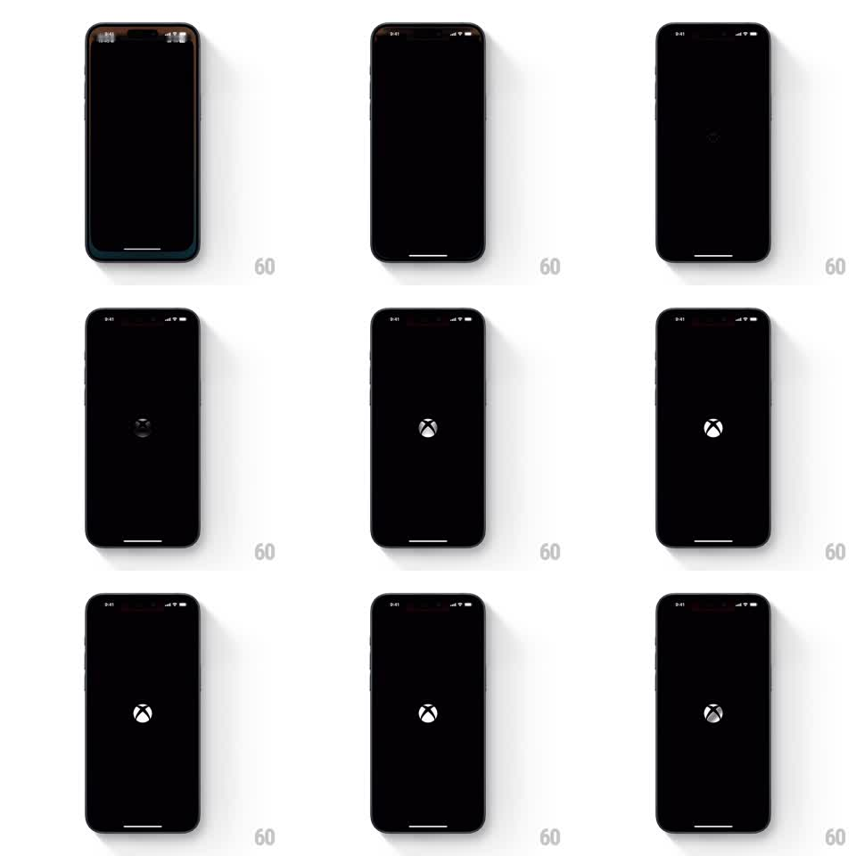

Media
Frame-by-frame

Rebuild this animation 1:1: Xbox's splash - the white Xbox sphere logo fading in from near-black against a pure black screen and holding.

Rebuild this animation 1:1: Xbox's splash - the white Xbox sphere logo fading in from near-black against a pure black screen and holding. ## Integration Integration: stack-agnostic spec - springs given as stiffness/damping, timed motions as duration + curve; map every value to your framework and animation library of choice. ## Scene Pure black screen. At dead center, the Xbox sphere logo emerges from near-invisible dark gray to full white, holds at center, and remains as the app loads beneath. ## Motion spec Pattern: single-element luminance fade-in. - The logo starts at ~8% white (barely discernible on black) and fades to 100% white over 1.4s (ease-out) - no scale, no position change. - At full brightness, a barely-there glow halo blooms around the sphere (blur radius ~24px, opacity to 0.15 over 400ms). - Hold at full white for ~1s, then the logo dims to 85% as the dashboard/home UI fades up around it (crossfade 500ms), the logo settling into its header position if the layout requires it, otherwise simply crossfading out. ## Calibration - Center placement is exact - the logo never moves during the fade. - The fade is luminance-only; any scale or slide breaks the restraint that makes it feel premium. ## Reduced motion Logo appears at full white without the fade. ## Don't miss - Background stays pure #000 the whole time - the phone bezel frames a void. - No spinner, no wordmark, no sound cue in the visuals - the logo alone carries the splash.